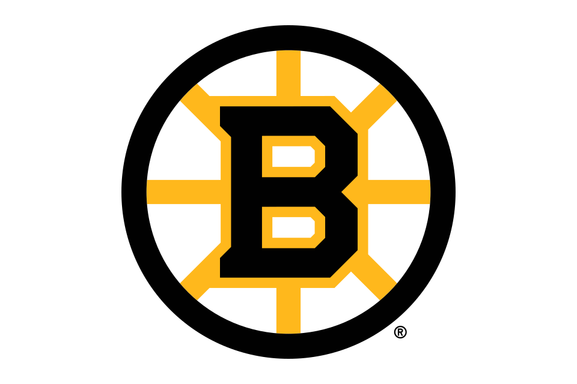

Los Angeles Kings
Pacific · Western Conference · 40 headlines in the last 30 days
Kings highlights
5 videos
 Kings vs. Bruins
Kings vs. Bruins Flames vs. Kings
Flames vs. Kings
 Islanders vs. Kings
Islanders vs. Kings
 Predators vs. Kings
Predators vs. Kings
 Penguins vs. Kings
Penguins vs. KingsLatest Kings news
40 stories
Darcy Kuemper stops 29 shots for 40th career shutout in Kings' 3-0 win over Bruins
BOSTON (AP) — Darcy Kuemper stopped 29 shots for his 40th career shutout, including Morgan Geekie’s third-period penalty shot, and Mats Zuccarello scored an early goal as the Los Angeles Kings beat the Boston Bruins 3-0 on Tuesday night to snap a four-game skid.Andre Lee and Erik Gustafsson also scored for the Kings,…

The Los Angeles Kings Are a Complete Disaster and It's Time to Blow It All Up
The Kings are 5-11-2, their season is already slipping away, and Ken Holland’s old-school approach isn’t working — it’s time for Los Angeles to stop pretending this roster is a contender and blow it all up.


It's Panic Time for the Kings
LOS ANGELES — The Kings came out ice-cold and lost to the Flames, 3-2. Los Angeles has lost four straight games and are tied for the second-worst record in the NHL.


Sharangovich and Wolf help the Flames hold off the Kings for a 3-2 win
LOS ANGELES (AP) — Matvei Gridin scored the go-ahead goal with 8:39 remaining and the Calgary Flames held off the Los Angeles Kings 3-2 on Saturday night.Yegor Sharangovich had an empty-net goal and an assist, and Morgan Frost also scored for Calgary.

A Huge Milestone for Kuemper, A Brutal Result for the Kings
Darcy Kuemper reached 500 career NHL starts, but allowed four goals on 20 shots as the Kings suffered a 5-2 loss to the Islanders.


Schenn helps Islanders beat Kings 5-2 to end winless streak at 4
LOS ANGELES (AP) — Brayden Schenn had a goal and two assists, Victor Eklund scored for the fourth straight game, and the New York Islanders snapped a four-game losing streak with a 5-2 victory over the Los Angeles Kings on Thursday night.Matthew Schaefer scored in his 100th NHL game, Simon Holmstrom had a goal and an…

Schenn Records Three Points, Islanders Snap Four-Game Skid With 5-2 Win Over Kings
Reinforcements spark a crucial victory as New York halts its slide, powered by Brayden Schenn’s offensive outburst and Matthew Schaefer’s historic scoring streak in his milestone appearance.


Kings forward Kevin Fiala set for season debut after breaking leg at Milan Cortina Olympics
(AP) — Los Angeles Kings forward Kevin Fiala will make his season debut on Thursday night against the New York Islanders, playing for the first time since breaking his left leg at the Milan Cortina Olympics.Fiala was injured playing for Switzerland in a preliminary round game on February 13, causing him to miss the…

Filip Forsberg has 2 goals, Juuse Saros gets shutout in Predators' 5th straight win, 3-0 over Kings
LOS ANGELES (AP) — Filip Forsberg scored two goals, Juuse Saros made 30 saves in his 28th career shutout and the Nashville Predators extended their winning streak to five games with a 3-0 victory over the Los Angeles Kings on Tuesday night.Nils Hoglander had two assists and Adam Wilsby got an empty-net goal in the…

The Kings Spent Their Future Chasing the Present. Simon Edvinsson Offers a Way Forward.
Los Angeles spent years building one of hockey's best prospect pools and burned through most of it without winning a playoff series. With the current window deteriorating and the next one still taking shape, a 23-year-old defenseman in Detroit is the kind of opportunity the Kings need.


Takeaways: Penguins Pounce Kings To Snap Four-Game Skid
Pittsburgh earned a much-needed win against a struggling Kings team.

Former Kings Forward Plays Hero in Capitals' Electrifying Victory
Pierre-Luc Dubois sparked a gritty comeback, tallying two points and the decisive third-period strike to snap Washington’s skid and down the high-powered Panthers in a thriller.


The Kings Had Many Miscues In Their Loss to the Penguins
LOS ANGELES — The Kings controlled many aspects of this game but still lost 5-2 to the Penguins. There are many of the mistakes Los Angeles caused that led to their own downfall.


Sidney Crosby takes sole possession of 6th on NHL scoring list in Penguins' 5-2 win over Kings
LOS ANGELES (AP) — Sidney Crosby scored two goals while moving into sole possession of sixth place on the NHL’s career scoring list, and the Pittsburgh Penguins snapped their four-game skid with a 5-2 victory over the Los Angeles Kings on Saturday night.The 39-year-old Crosby broke his tie with Kings great Marcel…

Pittsburgh Penguins at Los Angeles Kings Preview: Lineups, Game Notes, Where To Watch
In the wake of their second four-game losing streak of the season, the Pittsburgh Penguins headed out West Saturday to take on the Los Angeles Kings for the first tilt of their three-game California road trip.

Game Preview: Pittsburgh Penguins @ Los Angeles Kings 11/7/2026
Who: Pittsburgh Penguins (5-9-2, 12 points, 7th place Metropolitan Division) @ Los Angeles Kings (5-7-2, 12 points, 7th place Pacific Division) When: 9:00 p.m. ET How to Watch: Locally televised game on ABTV and Sportsnet Pittsburgh, streaming for out of market at ESPN+ Pens’ Path Ahead: The Penguins have less than 24…


Sharks hold players-only meeting after Kings loss
Sherwood says performance has been 'unacceptable' for San Jose, which has lost five of six

Adrian Kempe scores a hat trick as the Kings beat the Sharks 7-2
LOS ANGELES (AP) — Adrian Kempe had a hat trick and an assist, Quinton Byfield scored two goals, and the Los Angeles Kings routed the San Jose Sharks 7-2 on Wednesday night.Erik Haula and Joel Armia also scored for the Kings and Darcy Kuemper made 30 saves.

Macklin Celebrini ends scoring drought, but Kings hat trick sinks Sharks in loss
The San Jose Sharks' offensive woes continued in their loss to the Los Angeles Kings on Wednesday at Crypto.com Arena.


Islanders Bring in Former Kings Defenseman With Plenty of NHL Experience
Stanley Cup champion Ben Hutton joins New York on a professional tryout, seeking to parlay a decade of blue-line reliability into a roster spot with his sixth franchise.
Gustafsson's Rise Is an Indictment of the Kings' Blue Line
TORRANCE, CA — Erik Gustafsson played two NHL games last season. He spent the rest of 2025-26 in Grand Rapids, where he posted 37 points in 39 AHL games for Detroit's affiliate. That ended a nine-season run as an NHL regular across eight clubs, a stretch of 226 points in 474 games without a single stop in the minors.


Tage Thompson scores twice as Sabres extend road point streak to 7 with 3-2 win over Kings
LOS ANGELES (AP) — Tage Thompson scored twice, including the go-ahead goal with 6:20 remaining, and the Buffalo Sabres beat the Los Angeles Kings 3-2 on Saturday to extend their road point streak to seven games.Jack Quinn had a goal and an assist, Zach Benson and Rasmus Dahlin each had two assists, and the Sabres won…
Senators' Hayden Hodgson suspended two games for charging and boarding Kings' Brandt Clarke
NEW YORK (AP) — Ottawa Senators forward Hayden Hodgson has been suspended two games for charging and boarding Los Angeles Kings defenseman Brandt Clarke.The NHL’s Department of Player Safety announced its ruling Friday after holding a disciplinary hearing with Hodgson.